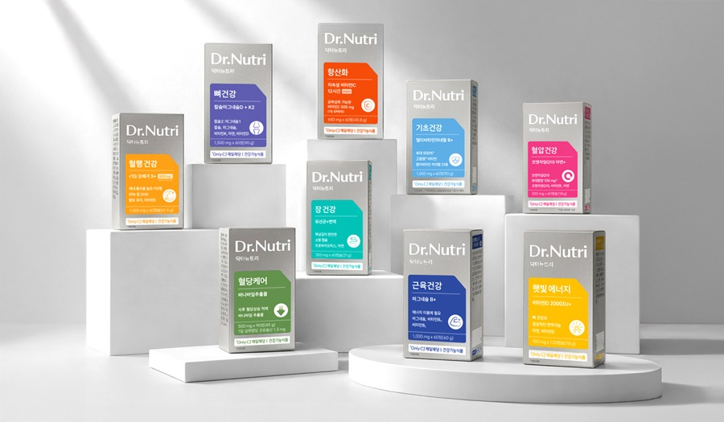
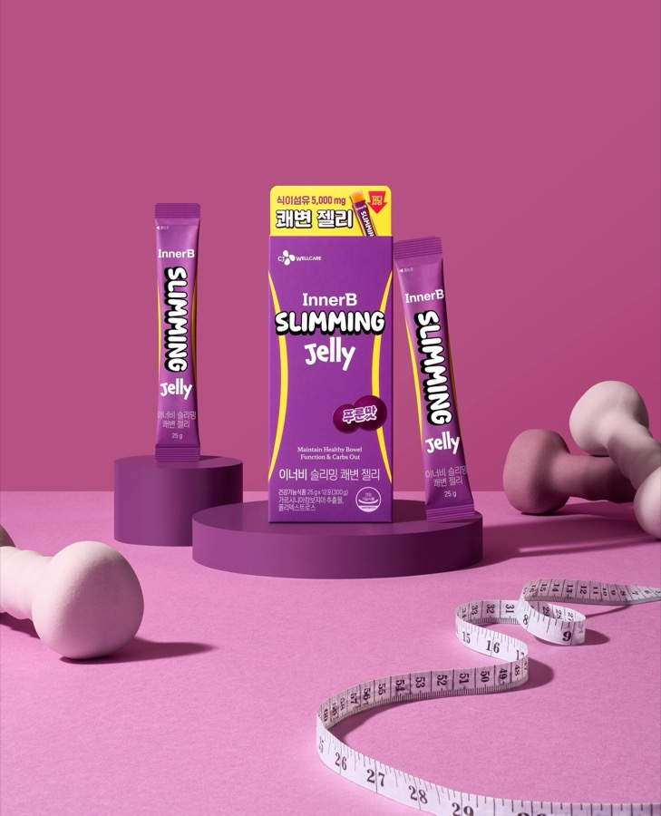
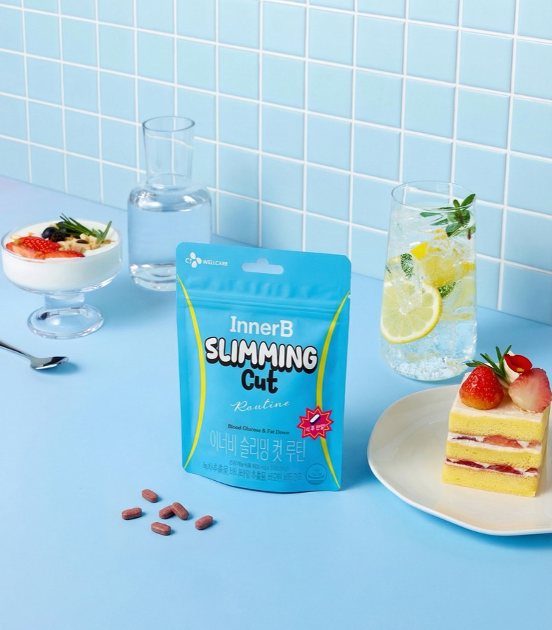
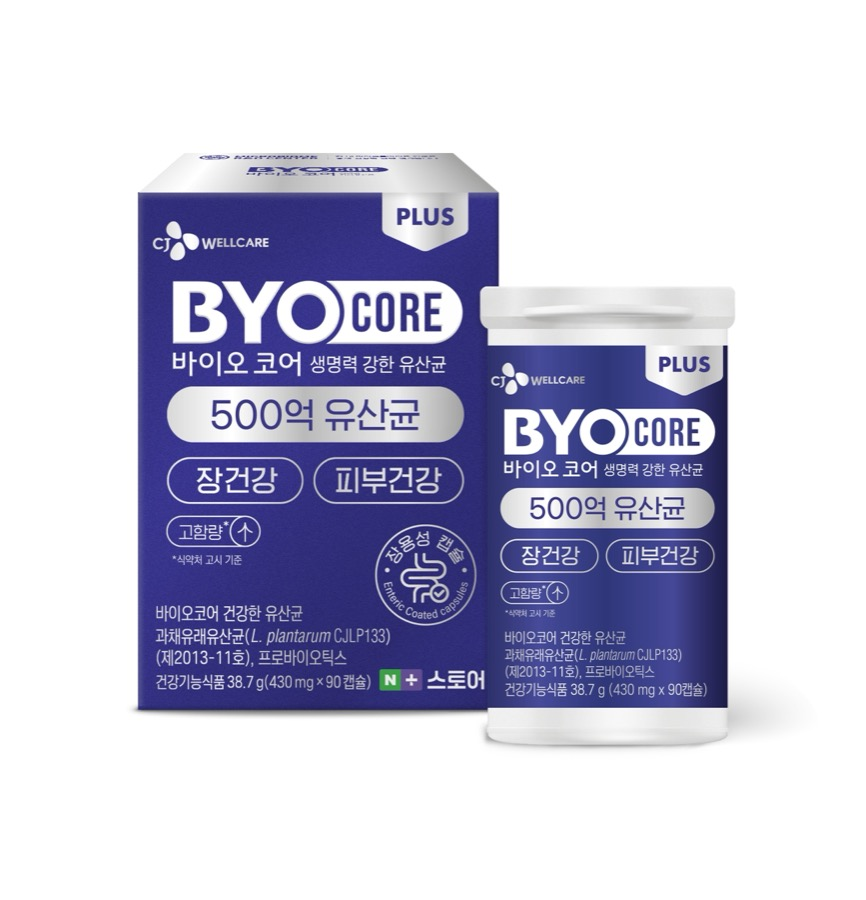

Newsroom
CJ웰케어의 소식
전체 소식

CJ웰케어, 5070 세대 맞춤 식후 케어 ‘RB101 유산균&효소’ 출시
바이오코어
CJ웰케어, 한 병으로 채우는 한 끼 영양 ‘맥플랜 뉴트리션 드링크’ 3종 출시
MAC PLAN
CJ웰케어, ‘바이오코어 쓰리핏 유산균 다이어트’ 코스트코 전점 입점…오프라인 유통망 확대
바이오코어CJ웰케어, MAC 기반 웰니스 브랜드 ‘맥플랜(MAC PLAN)’ 런칭
MAC PLAN
CJ웰케어, 기초영양 전문 브랜드 ‘닥터뉴트리’ 신규 라인업 출시
기초영양
CJ웰케어, ‘멜라메이트’ 구미·필름 신제품 출시… 나이트 라이프스타일·취향 맞춰 ‘골라 즐긴다’
멜라메이트
CJ웰케어, ‘이너비 슬리밍 쾌변젤리’ 출시… 다이어트·배변 관리 2중 기능 구현
InnerB
CJ웰케어, 혈당·체지방 잡는 다이어트 건강기능식품 ‘이너비 슬리밍 컷 루틴’ 출시
InnerB
CJ웰케어, 전립선 건강기능식품 ‘전립소 참당귀황기 프리미엄’ 출시
전립소
CJ웰케어, ‘바이오코어 500억 유산균’ 리뉴얼…화사 새 모델 발탁
바이오코어등록된 게시물이 없습니다. 새로운 소식이 곧 업데이트됩니다.
Media Contact
문의하기
취재 · 보도 문의
보도자료 원문과 이미지가 필요하시면 홍보 담당자에게 문의해 주세요.